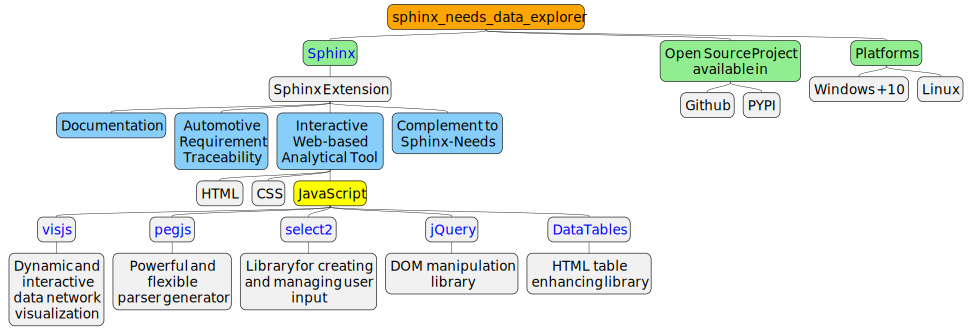
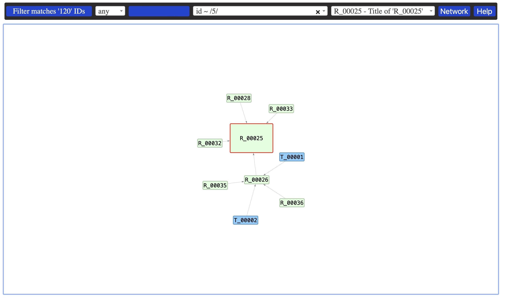
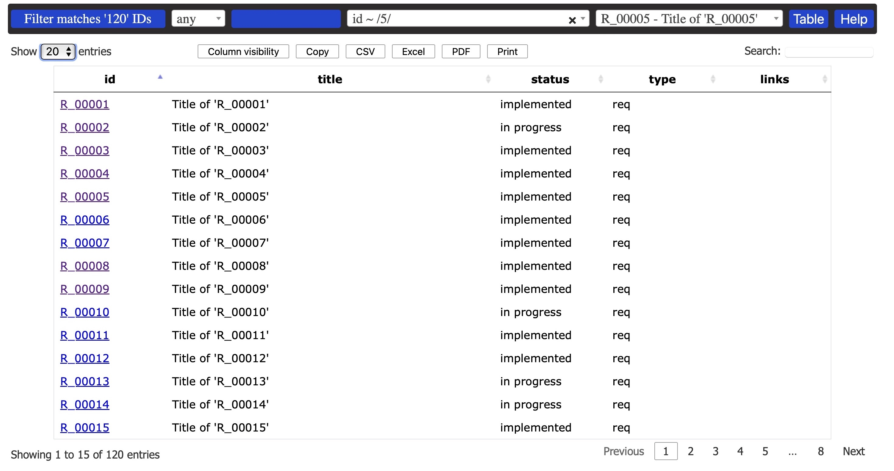
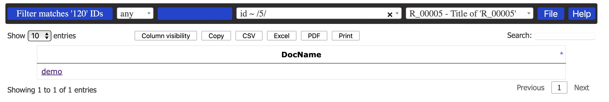
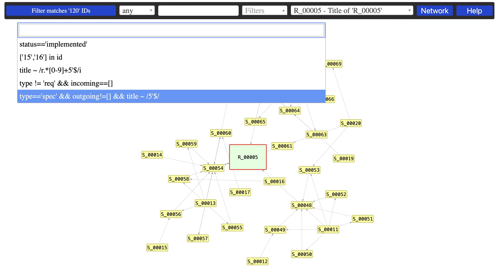
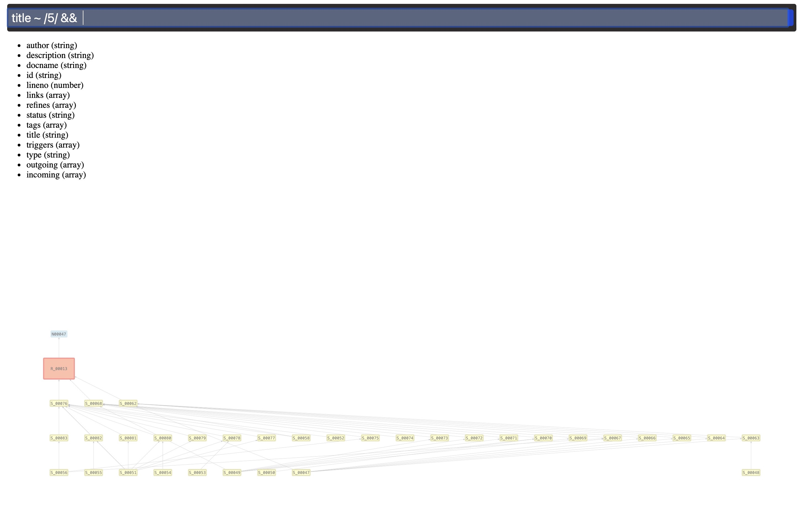
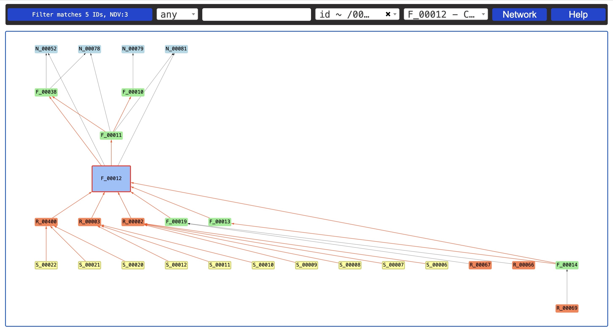
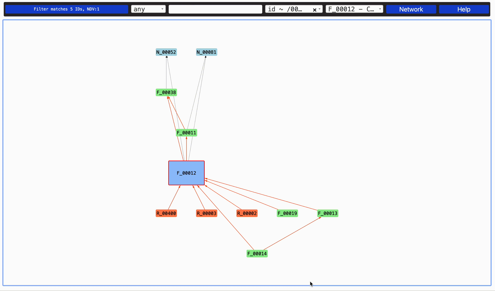
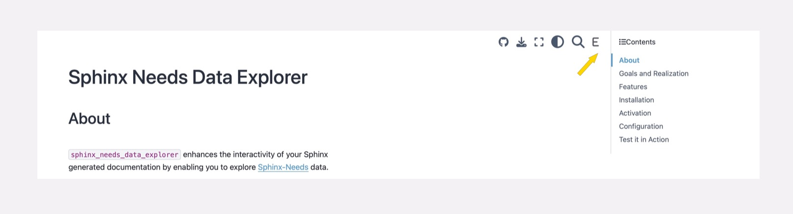
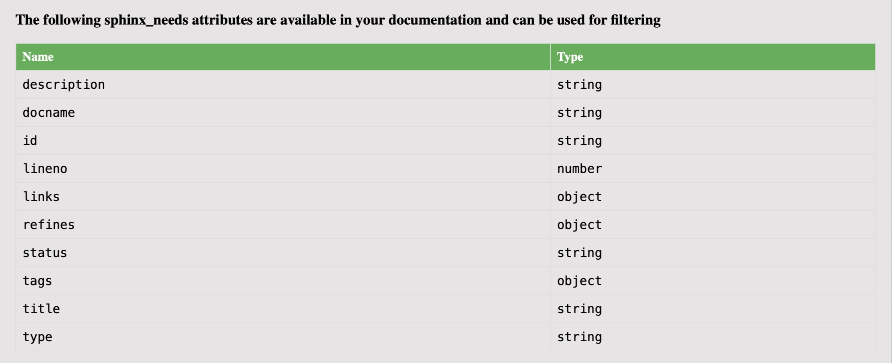

Sphinx Needs Data Explorer#
About#
The sphinx_needs_data_explorer is a web application written in HTML, CSS, and JavaScript, provided as a Sphinx extension. It enhances the interactivity of your Sphinx-generated documentation by enabling you to explore Sphinx-Needs-Data generated by the Sphinx-Needs-Extension.
Goals and Realization#

Features#
Three Sphinx-Needs Data View Perspectives#
Network-View#
In Network-View-Perspective you can see how sphinx-needs data are interconnected in data networks.
You can choose which data context to see
incoming connections from in-neighbours
outgoing connections from out-neighbours
incoming and outgoing connections
You can choose network layout
hierarchical bottom-up
hierarchical right-to-left
hierarchical with repulsion

Table-View#
In Table-View-Perspective you can see sphinx-needs data in table. You can select which columns should be visible and which hidden.

File-View#
In File-View-Perspective, you can see a list of files in which Sphinx-needs data were found.

Powerfull Interactive Data Filtering#
You can predefine filtering expressions during documentation generation or interactively while browsing documentation, and apply the data filtering across all three view perspectives.

You can use attribute lookup table while writing your filters.

Exploring In-Neighbours, Out-Neighbours or both#

Visualizing Constraint Violations in Network Transitions#

Controlling Neighborhood Depth in Network Visualization#

Switching between Perspective Views and Documentation#

Interaction#

Installation#
You can install sphinx-needs-data-explorer with pip
pip install sphinx-needs-data-explorer
Alternatively (Linux)
git clone https://github.com/mi-parkes/sphinx-needs-data-explorer.git
cd sphinx-needs-data-explorer
python3 -m venv .venv
source .venv/bin/activate
pip install -r doc/requirements.txt
python3 -m build --wheel
pip install dist/sphinx_needs_data_explorer*.whl
Activation#
In your conf.py configuration file, add sphinx_needs_data_explorer to your extensions list. And, please, make sure that sphinx_needs extension is configured to generate needs.json file in the root of your documentation E.g.:
extensions = [
...
'sphinx_needs_data_explorer'
...
]
...
needs_build_json = True
or you can include it only if the extension is available in your virtual environment:
...
try:
import sphinx-needs-data-explorer
extensions.add('sphinx-needs-data-explorer')
except ImportError:
pass
...
needs_build_json = True
If your project uses sphinx_book_theme,
sphinx_needs_data_explorer supports full integration in your documentation by adding E header button accesible from any documentation page.

Otherwise, you can create hyperlink to sphinx_needs_data_explorer by adding the following role in your .rst file(s)
:sphinx_needs_data_explorer:`Sphinx Needs Data Explorer Test`
Configuration#
If defined, the following parameters are used for configuration:
needs_extra_options - the parameter defines extra sphinx-needs options
needs_extra_links - the parameter defines the type links to use when extracting sphinx-needs linkage
needs_types - the parameter defines sphinx-needs types and their attributes like node colors
You can predefine filtering expressions to populate the filter drop-down list:
sphinx_needs_data_explorer_config = {
"filters":[
"status=='open'",
"['15','16'] in id",
"title ~ /r.*[0-9]+5'$/i",
"type != 'req' && incoming==[]",
"type=='spec' && outgoing!=[] && title ~ /5'$/"
]
}
sphinx_needs_data_explorer Help lists all attributes found in your project that can be used for data filtering.

Visualizing Constraint Violations in Network Transitions:
sphinx_needs_data_explorer_config = {
"valid-linkage-color":"Black",
"invalid-linkage-color":"OrangeRed",
"valid-linkage":{
'need': {
'need':'refinement'
},
'feat': {
'fear':'refinement',
'need':'links'
},
...
}
}